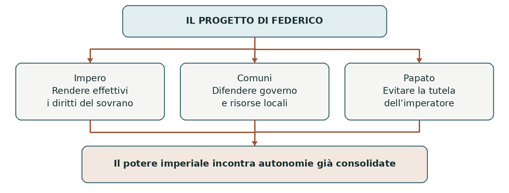
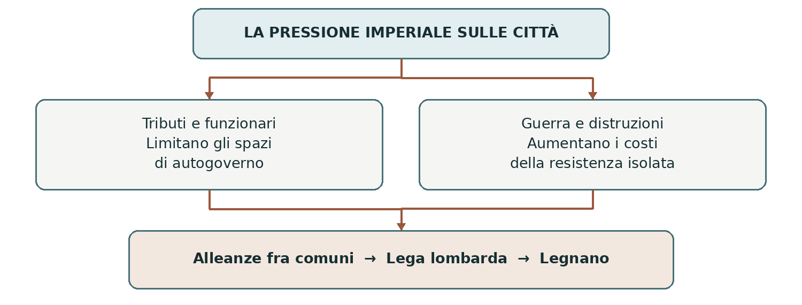
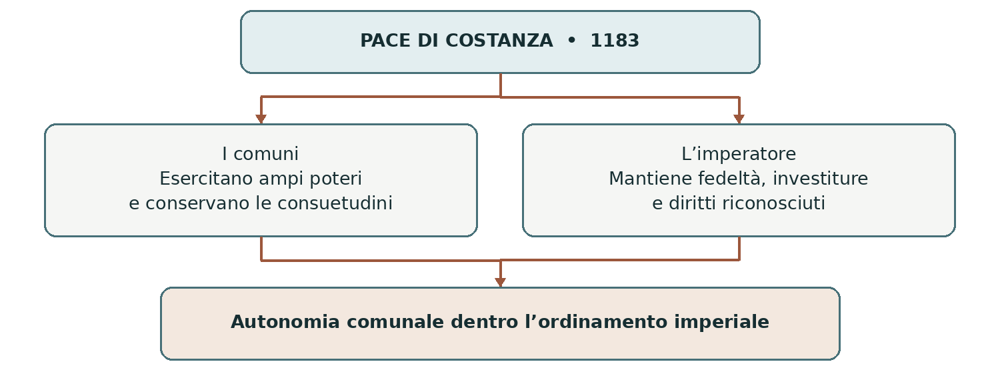
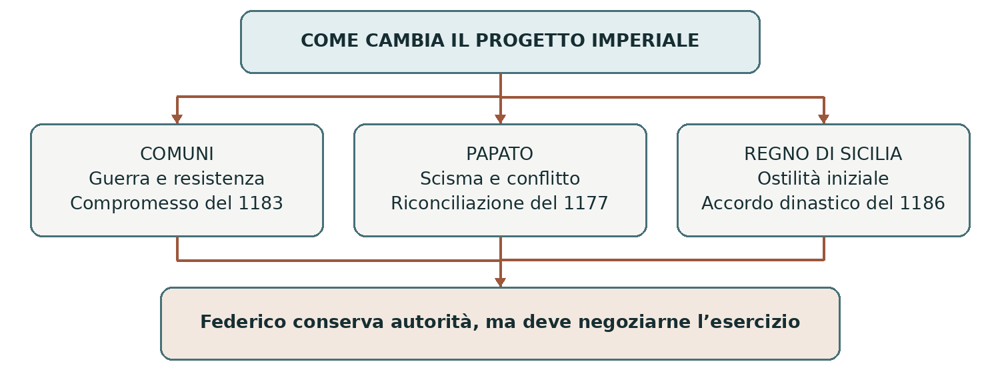

01 IL POTERE IMPERIALE NEL XII SECOLO
Federico I Barbarossa
Impero, comuni e papato nella seconda metà del XII secolo
Tra il 1152 e il 1190 Federico I cercò di rendere effettiva l’autorità imperiale in Germania e in Italia. Il confronto con i comuni, con il papa e con il Regno normanno lo costrinse a modificare i propri progetti. Studiare questa vicenda permette di capire perché, nel Medioevo, riconoscere un sovrano non significasse obbedirgli in ogni decisione.
0 Domanda generatrice
Perché un imperatore che rivendicava un potere superiore a tutti dovette scendere a patti con le città e con il papa? La risposta richiede di seguire insieme le guerre, le alleanze e i diversi modi di intendere il potere.
In sintesi La forza militare non bastò a cancellare le autonomie: il risultato fu una ridefinizione dei rapporti fra i poteri.
1 Il mondo precedente
Nel XII secolo il Sacro Romano Impero comprendeva territori molto diversi. Il suo nucleo era nei regni di Germania e d’Italia; vi apparteneva anche il regno di Borgogna. Il regno d’Italia imperiale riguardava gran parte dell’Italia centrosettentrionale, non tutta la penisola. A sud esisteva il Regno di Sicilia, governato dagli Altavilla e comprendente anche il Mezzogiorno continentale.
L’imperatore non disponeva di uno Stato centralizzato come quelli contemporanei. Per ottenere uomini, risorse e obbedienza doveva accordarsi con principi, vescovi e signori. Intanto molte città italiane avevano sviluppato istituzioni comunali: sceglievano magistrati, amministravano la giustizia e organizzavano la difesa. La crescita delle attività urbane rendeva questi poteri sempre più importanti.
Il papa univa all’autorità religiosa interessi e poteri territoriali nell’Italia centrale. Aveva bisogno di protezione, ma temeva che un imperatore troppo forte limitasse la libertà della Chiesa e il suo governo su Roma.
In sintesi L’Impero era un insieme di poteri sovrapposti. Federico avrebbe cercato di coordinarli e subordinarli alla propria autorità: proprio qui nacque il conflitto.
2 Le fratture
Una nuova monarchia in Germania
Prima dell’ascesa di Federico, il regno tedesco era stato attraversato dalle rivalità fra grandi casate. I nomi guelfi e ghibellini indicavano originariamente schieramenti dinastici legati, rispettivamente, ai Welf e agli Hohenstaufen. Non vanno confusi automaticamente con i successivi partiti italiani favorevoli al papa o all’imperatore.
Federico di Hohenstaufen, duca di Svevia, aveva legami di parentela con entrambe le famiglie. Nel 1152 fu eletto re dei Romani, titolo che apriva la strada alla dignità imperiale. Cercò il sostegno dei principi e di Enrico il Leone, duca di Sassonia, al quale fu restituita la Baviera nel 1156. Fu un equilibrio negoziato, non la fine definitiva delle rivalità tedesche.
Il contrasto sui diritti pubblici
La tensione di fondo riguardava chi avesse il diritto di governare. Federico considerava molte prerogative esercitate dai comuni come diritti del sovrano. Le città, invece, difendevano pratiche e istituzioni consolidate. Le spedizioni italiane trasformarono questa divergenza in un conflitto aperto.
In sintesi La relativa stabilità tedesca rese possibile l’intervento in Italia. Lo scontro nacque dal tentativo di rendere effettivi diritti imperiali già esercitati, in molti casi, dalle città.
3 Attori, gruppi e conflitti
Attore | Obiettivo e risorse | Limite principale |
|---|---|---|
Federico I | Rafforzare la monarchia; esercito e diritto imperiale. | Dipende dall’appoggio dei principi e degli alleati. |
Comuni | Difendere magistrati, entrate e controllo del contado. | Sono divisi da rivalità territoriali ed economiche. |
Papato | Salvaguardare autonomia ecclesiastica e potere territoriale. | Deve cercare alleati senza diventarne dipendente. |
Regno normanno | Conservare il regno ed evitare la pressione imperiale. | Affronta avversari esterni e ribellioni interne. |
In sintesi Le alleanze dipendevano dagli interessi dei soggetti. Per capire le scelte di Federico bisogna seguire anche quelle dei suoi avversari e sostenitori.
4 Il processo storico
La prima spedizione e la corona imperiale
Federico scese in Italia nel 1154. Voleva riaffermare i propri diritti e ottenere dal pontefice l’incoronazione imperiale. La prima dieta di Roncaglia, un’assemblea convocata presso Piacenza, gli offrì l’occasione per rivendicare l’autorità regia e ascoltare i contrasti fra le città.
I comuni non formavano un fronte compatto. Alcuni vedevano nell’imperatore un possibile protettore contro le città più potenti, soprattutto Milano. La contrapposizione fra “tedeschi” e “italiani” non descrive quindi correttamente il conflitto: gli eserciti e le alleanze attraversavano entrambi gli schieramenti.
Il rapporto con il papato sembrò inizialmente favorevole. Il comune romano contestava il potere temporale del pontefice; Adriano IV cercava inoltre sostegno contro i Normanni. Federico contribuì alla repressione del movimento legato ad Arnaldo da Brescia e fu incoronato imperatore a Roma il 18 giugno 1155. L’elezione regia del 1152 e l’incoronazione imperiale del 1155 erano dunque due momenti distinti.
Il cambiamento delle alleanze nel Mezzogiorno
Federico non realizzò l’intervento contro il Regno normanno e tornò in Germania. Nel Mezzogiorno regnava Guglielmo I, detto il Malo, impegnato a contrastare ribellioni interne e nemici esterni. Dopo il successo normanno, Adriano IV concluse con lui il trattato di Benevento del 1156.
Il papa riconobbe il sovrano normanno e i suoi possessi nel quadro del rapporto feudale con la Chiesa. Tale rapporto aveva precedenti: non nacque interamente nel 1156. Il re era vassallo del papa; il pontefice era il signore feudale superiore. Questo accordo ridusse la dipendenza del papa dall’aiuto imperiale e incrinò l’intesa con Federico.
In sintesi Federico ottenne la corona, ma non il controllo del Mezzogiorno. Il papa trovò nei Normanni un interlocutore con cui difendere i propri interessi.

Da Roncaglia alla distruzione di Milano
Nella seconda spedizione, iniziata nel 1158, Federico intervenne con maggiori forze. Milano si arrese, ma la questione non si esauriva in una vittoria militare: occorreva stabilire chi potesse governare le città e riscuotere le entrate pubbliche.
Le regalie e il diritto romano
Alla seconda dieta di Roncaglia del 1158, con il contributo di giuristi bolognesi, furono precisate le regalie, cioè i diritti spettanti al sovrano. Fra questi vi erano la riscossione di tributi, l’amministrazione della giustizia e il controllo di importanti risorse e vie di comunicazione. La cultura giuridica offriva così un fondamento alle rivendicazioni politiche imperiali.
Per le città, consegnare queste prerogative significava perdere mezzi concreti di governo. Chi incassava un pedaggio poteva finanziare uomini e opere; chi amministrava la giustizia decideva controversie e faceva rispettare le proprie norme. Dietro la discussione sui diritti stavano dunque risorse, interessi e rapporti di forza.
La repressione e lo scisma
La resistenza riprese. Crema, alleata di Milano, fu conquistata e distrutta nel 1160; Milano fu costretta alla resa e devastata nel 1162. Cremona, invece, era in questa fase fra gli alleati di Federico e rivale di Milano: non va confusa con Crema.
Nel frattempo, alla morte di Adriano IV nel 1159, fu eletto Alessandro III. Una parte dei cardinali sostenne un candidato rivale, Vittore IV, appoggiato da Federico. Si aprì uno scisma, cioè una divisione nell’obbedienza ecclesiastica. Il conflitto con i comuni si intrecciò così con lo scontro fra l’imperatore e il pontefice.
Alessandro III difendeva l’autonomia della Chiesa; Federico rifiutava che il potere imperiale fosse subordinato al papa e cercava di influire sul riconoscimento del pontefice. Le due autorità avanzavano pretese che potevano entrare in contrasto, pur condividendo la stessa cultura cristiana.
In sintesi La vittoria su Milano non cancellò le ragioni dell’opposizione. L’applicazione delle regalie e lo scisma ampliarono il numero e la determinazione degli avversari.

Dalla Lega lombarda a Legnano
Le città imparano a coordinarsi
Dopo le repressioni, il controllo imperiale continuò a incontrare resistenze. Alla terza spedizione, nel 1163-1164, seguirono nuove forme di collaborazione fra città. Nel 1167 si consolidò la Lega lombarda, un’alleanza di comuni volta a difendere le autonomie minacciate. Anche le precedenti alleanze potevano cambiare: Cremona entrò nella coalizione antimperiale.
La Lega non era uno Stato unitario. Ogni città conservava istituzioni e interessi propri, ma coordinava con le altre risorse e azioni militari. Il sostegno di Alessandro III rafforzò il fronte contro Federico. L’esistenza di un avversario comune poteva quindi avvicinare città che, in altre circostanze, erano rivali.
I limiti della forza imperiale
Durante la quarta spedizione, nel 1166-1168, Federico puntò su Roma e sostenne l’antipapa Pasquale III. Nel 1167 un’epidemia colpì duramente il suo esercito e lo costrinse al ripiegamento. L’episodio mostra quanto una campagna dipendesse anche da approvvigionamenti, salute delle truppe e possibilità di mantenere a lungo uomini lontani dalle loro terre.
Nella quinta spedizione, iniziata nel 1174, Federico cercò di spezzare la resistenza della Lega, ma non riuscì a prendere Alessandria. Il 29 maggio 1176, a Legnano, le forze comunali sconfissero l’esercito imperiale. La difesa della fanteria intorno al carroccio contribuì all’esito della battaglia. Il carroccio era un carro che portava le insegne della comunità e costituiva un punto di riferimento per i combattenti.
Dalla battaglia alla trattativa
Legnano indebolì la possibilità di imporre con le armi una soluzione ai comuni. Non fece scomparire l’Impero e non creò uno Stato italiano. Rese invece più conveniente la trattativa. A Venezia, nel 1177, Federico si riconciliò con Alessandro III; con i comuni fu concordata una tregua di sei anni.
Il papa e le città avevano combattuto un nemico comune, ma non perseguivano gli stessi obiettivi. La riconciliazione religiosa e politica del pontefice poteva precedere la sistemazione definitiva dei rapporti fra comuni e imperatore.
In sintesi La collaborazione fra città e le difficoltà delle campagne imperiali favorirono il negoziato. La tregua del 1177 aprì il percorso verso la pace di Costanza.
La pace di Costanza
Il 25 giugno 1183 l’accordo di Costanza riconobbe ai comuni della Lega l’esercizio di ampie prerogative e delle proprie consuetudini. Le città conservarono rilevanti capacità di amministrazione, giustizia e difesa. Il riconoscimento riguardava anzitutto i comuni della coalizione: non è corretto presentarlo come una concessione identica e immediata a tutte le città italiane.
Restavano però il legame con l’Impero e obblighi verso il sovrano. Il potere comunale poteva essere ampio senza diventare piena sovranità. Questa distinzione spiega il compromesso: le città ottenevano un riconoscimento giuridico delle proprie libertà, mentre Federico manteneva una posizione superiore nell’ordinamento politico.

5 Le fonti in dialogo
Documento A • Pace di Costanza, 1183. Atto emanato in nome di Federico I e del figlio Enrico, rivolto alle città della Lega. Regola diritti e obblighi e presenta l’accordo con il linguaggio dell’autorità imperiale. Due brevi passi della traduzione pubblicata in Reti Medievali:
«concediamo per sempre a voi città, luoghi e persone della Lega le regalie»; «prestino giuramento di fedeltà a Noi».
Documento B • Anonimo Milanese, cronaca del XII secolo. Il racconto degli accordi di Venezia esprime la diffidenza della parte comunale verso la riconciliazione fra papa e imperatore. Si rivolge a un pubblico interessato alle vicende cittadine e ne conserva una lettura schierata.
Interpretazione. Un atto giuridico stabilisce un assetto, ma non dimostra che ogni clausola sia stata sempre applicata. Una cronaca registra eventi e giudizi: la vicinanza ai fatti non elimina il punto di vista dell’autore. Letti insieme, i documenti mostrano che gli alleati non avevano interessi identici.
Leggi e ragiona. Quale espressione del documento A tutela i comuni? Quale preserva l’autorità di Federico? Perché il cronista milanese poteva giudicare diversamente l’accordo con il papa?
In sintesi La pace riconobbe l’autonomia entro l’Impero. Per valutarne gli effetti bisogna distinguere il testo dell’accordo, il punto di vista dei testimoni e la pratica politica successiva.
6 Conseguenze e nuovo assetto
Il matrimonio con gli Altavilla
Dopo Costanza Federico tornò in Italia nel 1184-1186, in una fase prevalentemente diplomatica. Nel 1186, a Milano, il figlio Enrico, futuro Enrico VI, sposò Costanza d’Altavilla, figlia di Ruggero II e zia del re Guglielmo II. Il matrimonio collegava la casa sveva alla dinastia normanna e apriva una prospettiva di successione nel Regno di Sicilia.
Non si trattò di un’annessione immediata del Mezzogiorno all’Impero. Alla morte di Guglielmo II, nel 1189, la successione fu contesa; Enrico ottenne il controllo del regno soltanto nel 1194, dopo la morte del padre. Le nozze crearono dunque una possibilità politica, il cui esito richiese altri conflitti.
Per il papato il legame fra Svevi e Altavilla apriva un nuovo problema: la stessa dinastia avrebbe potuto esercitare il potere sia a nord sia a sud dei territori pontifici. L’assetto raggiunto con Federico non eliminò quindi le ragioni di future tensioni.
Che cosa era davvero cambiato
I comuni della Lega avevano difeso spazi importanti di governo. Il papa aveva ottenuto il riconoscimento di Alessandro III e salvaguardato la propria autonomia. Federico conservava dignità e poteri imperiali, ma doveva esercitarli attraverso accordi. Anche in Germania la collaborazione con i principi rimase instabile: nel 1180 Enrico il Leone perse i ducati, dopo il conflitto con l’imperatore e con altri grandi signori.
Federico partecipò infine alla terza crociata e morì nel 1190, annegando nel fiume Saleph, in Asia Minore. La sua politica non si riduce alla sconfitta di Legnano: comprende il consolidamento della monarchia, i conflitti italiani e una strategia dinastica destinata a incidere sul secolo successivo.
In sintesi L’autorità imperiale rimase, ma dovette riconoscere poteri che non poteva assorbire. Il collegamento dinastico con il Mezzogiorno aprì una fase nuova.
7 Conclusione
La risposta alla domanda iniziale sta nella distanza fra autorità rivendicata e capacità di governare. Federico poteva richiamarsi ai diritti imperiali; le città disponevano però di istituzioni, risorse e alleati con cui difendersi. Il papa poteva a sua volta cambiare alleanza per conservare autonomia.
Sintesi finale Il progetto di Federico incontrò una società politicamente articolata. Le vittorie militari non cancellarono gli interessi dei comuni. La Lega rese più efficace la resistenza. Venezia chiuse lo scontro con Alessandro III; Costanza regolò il rapporto con le città. Le nozze del 1186 aprirono agli Svevi una prospettiva nel Mezzogiorno. L’esito fu un equilibrio negoziato, non il dominio incontrastato di un solo potere.
Orientarsi nel tempo e nello spazio
Coordinate essenziali. Seconda metà del XII secolo. Germania: elezione regia e rapporto con i principi. Italia centrosettentrionale: autonomie comunali e diritti imperiali. Roma: autorità papale e incoronazione. Regno di Sicilia: Mezzogiorno continentale e isola. Costanza: città a nord delle Alpi, sede dell’accordo del 1183.
Linea del tempo ragionata
Data | Evento | Perché conta |
|---|---|---|
1152 | Elezione regia di Federico | Inizia il consolidamento del potere monarchico. |
1154-1155 | Prima spedizione e incoronazione | I diritti rivendicati si traducono in intervento politico. |
1156 | Accordo di Benevento | Il papa si intende con Guglielmo I. |
1158 | Seconda dieta di Roncaglia | Le regalie diventano il centro dello scontro. |
1159-1162 | Scisma e repressioni | Il conflitto si estende; Milano viene devastata. |
1167 | Lega lombarda | La resistenza comunale si coordina. |
1176-1177 | Legnano e accordi di Venezia | La sconfitta imperiale favorisce la trattativa. |
1183 | Pace di Costanza | Autonomia riconosciuta dentro l’Impero. |
1186 | Nozze di Enrico e Costanza | Si apre una prospettiva dinastica sul Regno di Sicilia. |
1190 | Morte di Federico | Si chiude il suo regno, non la politica degli Svevi. |
Mappa concettuale del capitolo

Nesso da ricordare. Rivendicazione dei diritti → resistenza dei poteri locali → alleanze e guerra → trattative → nuovo equilibrio. Le frecce indicano relazioni spiegate nel capitolo, non un percorso inevitabile.
Il lessico e i saperi irrinunciabili
Vocabolario essenziale
Parola | Significato nel capitolo |
|---|---|
Comune | Istituzione di autogoverno cittadino; non coincide con un comune amministrativo attuale. |
Contado | Territorio rurale sul quale una città cerca di esercitare il proprio controllo. |
Console | Magistrato comunale con compiti di governo; carica diversa dal console dell’antica Roma. |
Dieta | Assemblea convocata dal sovrano per discutere e decidere questioni politiche e giuridiche. |
Regalie | Diritti pubblici e prerogative riconosciuti come spettanti al sovrano. |
Consuetudine | Pratica consolidata nel tempo alla quale viene riconosciuto valore giuridico. |
Vassallo e investitura | Il vassallo è legato a un signore da obblighi; l’investitura conferisce formalmente beni, diritti o uffici. |
Scisma e antipapa | Divisione nella Chiesa; l’antipapa rivendica il pontificato contro il papa riconosciuto legittimo. |
Lega | Alleanza fra soggetti che conservano una propria autonomia. |
Autonomia e sovranità | L’autonomia permette di governarsi entro un ordine superiore; la sovranità indica il potere supremo. |
Dieci cose da saper spiegare
1. L’Impero comprendeva poteri diversi e richiedeva accordi con principi e città.
2. Federico fu eletto re nel 1152 e incoronato imperatore nel 1155.
3. I comuni difendevano istituzioni e risorse; non erano tutti alleati fra loro.
4. Le regalie collegavano autorità giuridica, entrate e capacità di governo.
5. Il rapporto fra Federico e il papa passò dalla collaborazione al conflitto.
6. La repressione di Milano non eliminò la resistenza comunale.
7. La Lega coordinò le città e contribuì alla vittoria di Legnano.
8. Venezia nel 1177 e Costanza nel 1183 risolsero questioni differenti.
9. Costanza riconobbe ampie autonomie senza separare i comuni dall’Impero.
10. Il matrimonio del 1186 preparò una successione, non un’unione immediata.
Studiare e argomentare
Comprendere i nessi
1. Perché l’accordo con i principi tedeschi rese possibile la politica italiana di Federico?
2. Spiega con un esempio concreto perché le regalie erano importanti sia per l’imperatore sia per i comuni.
3. Ricostruisci il cambiamento nei rapporti fra Federico e il papato dal 1155 al 1177.
4. Perché alcune città sostennero inizialmente Federico? Perché altre alleanze cambiarono?
5. Quale differenza passa fra una vittoria militare, una tregua e una pace? Applica la distinzione a Legnano, Venezia e Costanza.
Correggere le affermazioni
Riscrivi ciascuna frase rendendola storicamente corretta e spiega l’errore:
a. Il papa elesse Federico imperatore nel 1152.
b. Guglielmo II il Malo concluse l’accordo di Benevento nel 1156.
c. Tutti i comuni italiani combatterono sempre contro Federico.
d. La pace di Costanza trasformò le città in Stati del tutto indipendenti.
e. Nel 1186 Federico conquistò e annesse il Regno di Sicilia.
Sostenere una tesi
Scrivi un testo di 15-20 righe sulla tesi: «La politica italiana di Barbarossa terminò con un compromesso». Usa almeno tre eventi precisi, distingui comuni, papato e Regno normanno e spiega anche che cosa Federico riuscì a conservare. Concludi rispondendo alla domanda generatrice del capitolo.
Lavorare con le fonti
Rileggi i due documenti a pagina 6. Distingui una norma, un giudizio e una tua interpretazione. Spiega perché il verbo «concediamo» è significativo anche quando l’accordo riconosce vantaggi ai comuni. Per controllare la risposta usa entrambe le parti del testo, non soltanto la vittoria di Legnano.
Fonti per approfondire
Materiale di partenza: mappe didattiche Barbarossa.pdf di gbprof. Per il controllo storico e documentario:
• Treccani, «Federico I imperatore, detto il Barbarossa»; «Roncaglia, diete di»; «Milano» nel Dizionario di Storia; «Lega lombarda» in Federiciana.
• Treccani, «Guglielmo I re di Sicilia»; «Enrico duca di Baviera, detto il Leone»; Theo Kölzer, «Enrico VI di Svevia», Dizionario Biografico degli Italiani, 1993.
• Reti Medievali, Antologia delle fonti bassomedievali, a cura di S. Gasparri, A. Di Salvo e F. Simoni, VII, 6, «Dalla guerra alla pace: Legnano, Venezia, Costanza». Estratti documentari e cronistici.
Testi consultabili su treccani.it e su www.rm.unina.it/didattica/fonti/anto_bme/cap_VII/VII_6_stampa.htm